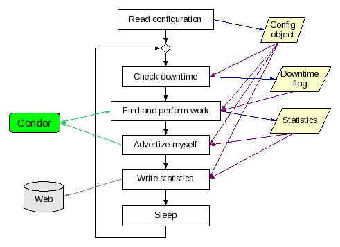
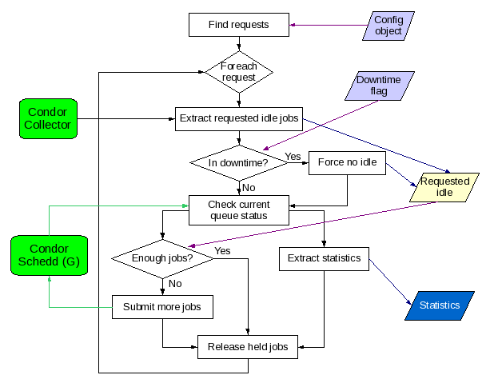
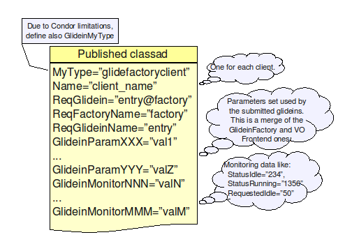
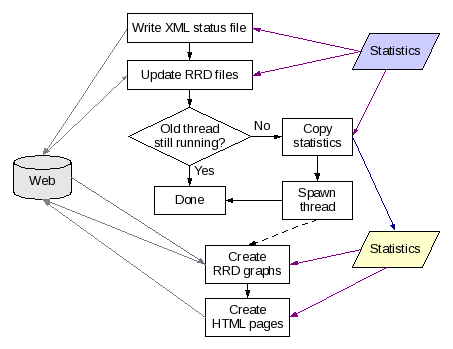
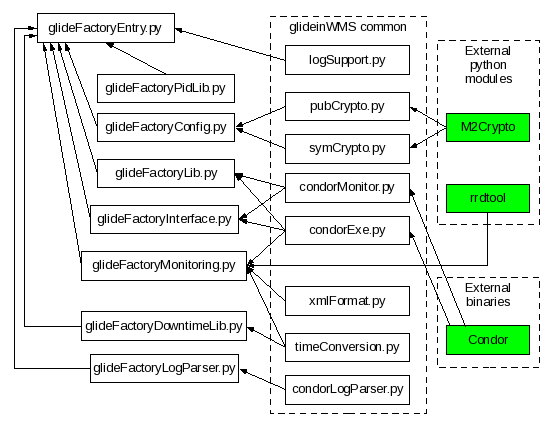

Factory Entry Daemon Internals
Glidein Factory Overview
A Glidein Factory is composed of a
Factory daemon and several Factory Entry Daemons. Each Entry Daemon
is autonomous; it advertises itself and processes the incoming
requests.
See the picture below for a logical overview.
All
daemons of a Glidein Factory share the same directory tree. The root
of the tree contains the common startup and configuration files,
while each entry point has a few additional configuration files on
its own. Each entry point is completely described by these files on
disk.
Program flow
The Factory Entry Daemon is based on the polling principle; it runs in an eternal loop as described in the picture below.

The
configuration is read only once, at daemon startup, so a restart is
needed for every configuration change.
However, the daemon does
check the downtime file at every iteration, so a change to the
downtime configuration file does not need any further action on the
daemon.
Most stages are self explanatory, so they will not be described to further detail. However a few need more detail; in particular:
Find and perform work
This stage is composed of three logical parts, as shown in the picture below:
Find the requests by querying the Condor Collector
For each request:
Keep the required number of idle jobs in the Condor Schedd (G) queue
Extract the statistics

This stage requires two input fields, the configuration data and the downtime flag, and returns the request-specific job statistics.
It also communicates with external Condor daemons. To talk to them, it currently uses the condor command line tools:
- condor_status to query the Condor Collector
- condor_q to query the Condor Schedd
- condor_submit to submit new jobs to and to release held jobs in the Condor Schedd
The requests are inserted into the Condor Collector by the VO frontends. The picture below shows the format of the request as present in the Collector.

Advertise myself
The advertise stage advertises the existence of the Entry Daemon
and its statistics to the Condor
Collector.
Two classes of ClassAds are sent, one for the
Entry Daemon itself, and one for every processed event. The two types
of ClassAds are shown in the pictures below.


The current implementation uses a Condor provided command line tool, namely condor_advertise, for this task.
Write statistics
The write statistics stage converts the in-memory statistics into files in the Web exported monitoring area, as shown in the picture below.

The data is written both in a XML file and
as entries in RRD
archives.
The XML data can be used by other applications, while the RRD archives can be viewed using the provided HTML pages based on JavascriptRRD and Flot.
The current implementation will use the Python RRDTool library, if available. Else, it will fall back to the command line tool.
Source code distribution
The Factory Entry Daemons are implemented as python scripts, and they don't need to be pre-compiled.
The code is spread over several python modules, some specific to
the factory other shared between different parts of the glideinWMS. A
shell script is also used.
There are also some external
dependencies, namely the rrdtool
and M2Crypto
python libraries and the Condor
command line binaries.
The picture below shows the dependency tree.

glideFactoryEntry.py
is executable.
The glideinWMS common libraries are in glideinWMS/lib
directory.
The shell script is located in the root directory of
the factory tree, copied there during the creation
of the tree itself.
Configuration files
The Factory Entry Daemons have configuration files both in the root of the factory configuration tree as well as in the entry specific subdirectory. The configuration files in the root are common for all the entry points, while the ones in the entry subdirectory are specific to that Entry Daemon.
Warning: The configuration files should never be changed by hand. They are generated and maintained by a dedicated tool.
Shared configuration files
The configuration files in the root of the factory configuration tree are shared between all the Factory Entry Daemons.
The following files are used:
glidein.descript – This file contains the factory description.
Most of the elements are used. Follows the description of the most important ones:- FactoryName and GlideinName – The factory name used when advertising the Entry Daemon.
- WebURL – Where are the glidein support files located.
- PubKeyType – Should I use encrypted IPC and if so, using which algorithm.
- DowntimeFile – The name of the file containing the factory wide downtimes. Usually defaults to “factory.downtimes”.
- LoopDelay and AdvertiseDelay – How much should it sleep between iterations, and the minimum collector update frequency.
params.cfg – This file contains the factory global default parameters. These are for values the frontend will change, also published in the factory classad
Entry-specific configuration files
The configuration files in the entry-specific subdirectory are used by only one Entry Daemon.
The following files are used:
job.descript – This file contains the entry description. It is used by the factory entry daemon in order to decide how to do work.
All the elements are used. Follows the description of the most important ones:- EntryName – The entry name used when advertising the Entry Daemon.
- ScheddName – The Condor Schedd used to submit jobs.
- SubmitCluster – How many jobs should I submit in a single submission.
- MaxIdle, MaxRunning, MaxHeld – Limits on the number of jobs in the Condor Schedd queue.
- MaxSubmitRate, MaxRemoveRate, MaxReleaseRate, SubmitSleep, RemoveSleep, ReleaseSleep – Knobs to limit the interaction with the Condor Schedd.
- DowntimeFile – The name of the file containing the entry-specific downtimes. Usually defaults to “entry.downtimes”.
job.condor – A condor description file that is used for submitting the jobs using condor_submit.
params.cfg – This file contains the entry-specific default parameters. These are for values the frontend will change, also published in the factory classad
attributes.cfg - This file contains fixed values; these are published in the factory classad
infosys.descript – This file contains the reference to the information system that contains the information of this entry point.